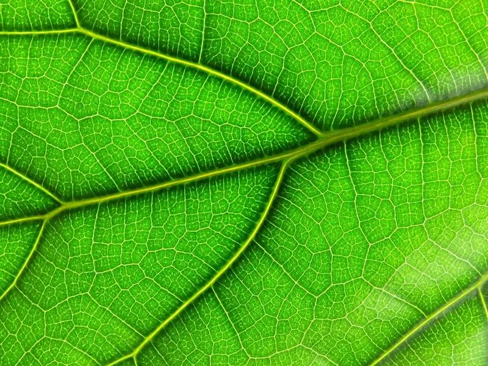
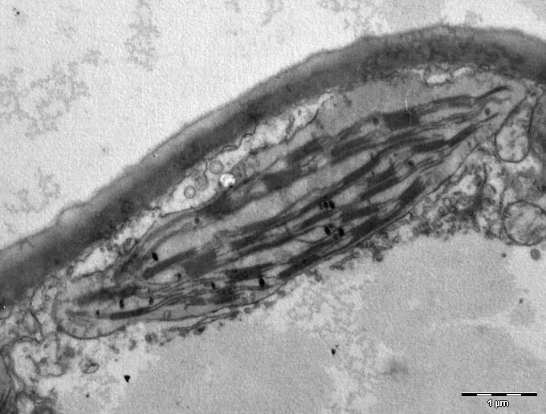
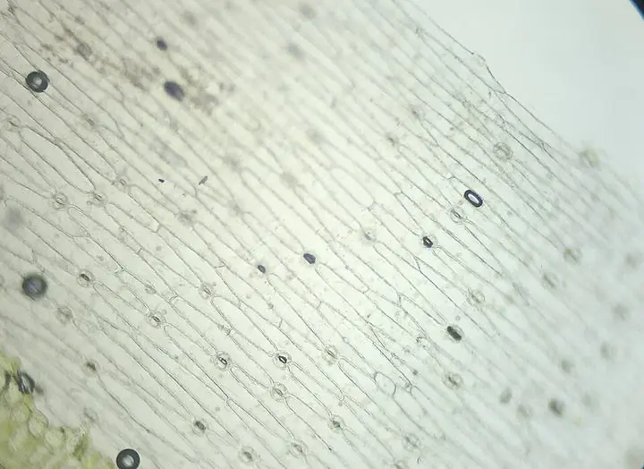
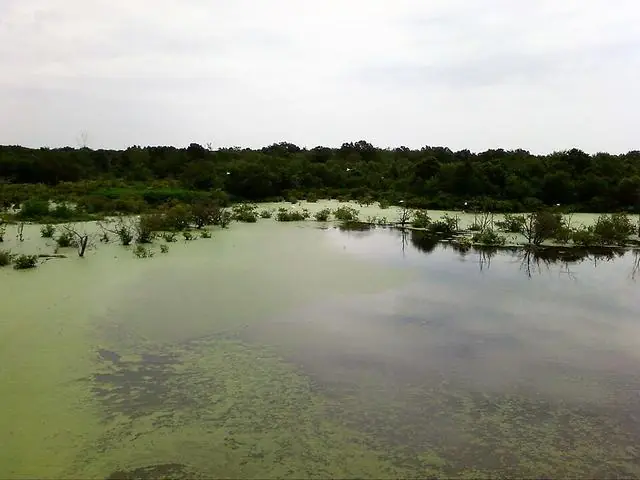
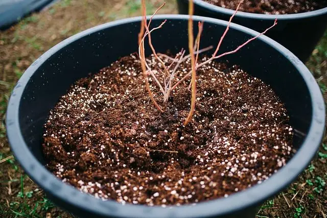
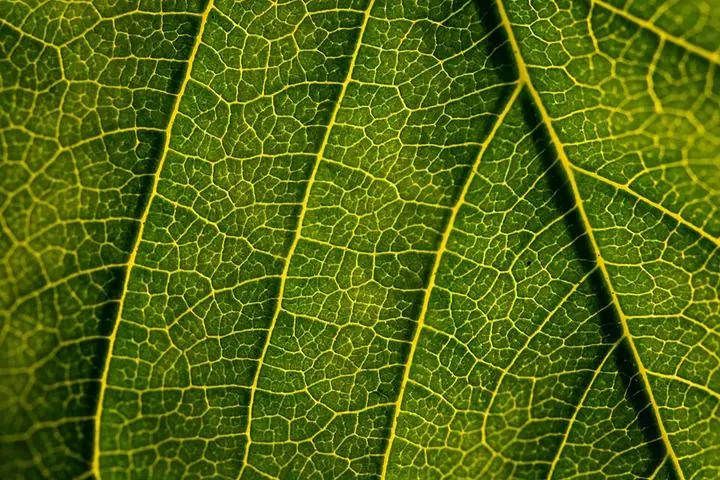
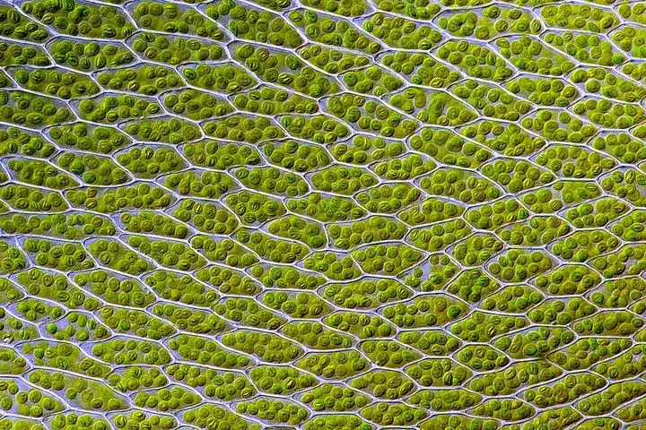

O que é a fotossíntese?
Fotossíntese quer dizer, na tradução literal, "síntese pela luz". É o processo que plantas, algas e algumas bactérias usam para fabricar o próprio alimento. Dizendo de um jeito bem direto: a energia do sol entra, o gás carbônico e a água são montados em açúcar, e o oxigênio que a gente respira sai como subproduto.
Quem descobriu isso?
A história começa no século XVII, com Jan Baptista van Helmont. Ele plantou um ramo de viveira num vaso de terra e pesou tudo antes e depois de cinco anos. A planta tinha crescido uns 76 quilos, mas a terra só tinha perdido cerca de 60 gramas. A conclusão dele foi que a planta se crescera à custa da água — estava pela metade, mas era um começo.
No século XVIII, Joseph Priestley mostrou que uma planta pode "reparar" o ar estragado por uma vela, e Jan Ingenhousz percebeu que para isso a luz era necessária. Só em 1941 é que Samuel Ruben e Martin Kamen, usando oxigênio radioativo, fecharam a conta e mostraram de onde vinha o oxigênio liberado.
A reação
A equação simplificada que aparece em qualquer livro de biologia é esta:
6 CO2 + 6 H2O + luz → C6H12O6 + 6 O2
Do lado esquerdo ficam os ingredientes: gás carbônico, água e luz. Do lado direito, o que a planta guarda (glicose) e o que ela devolve para o ambiente (oxigênio). O carbono do CO2 é o que vira a estrutura do açúcar; a energia da luz é o que paga a conta dessa montagem.
Onde ocorre?
Nas plantas terrestres, a fotossíntese acontece quase toda dentro das folhas. A folha tem camadas de células cheias de cloroplastos, e é dentro deles que a clorofila — o pigmento verde — absorve a luz. A CO2 entra pelos estômatos, aqueles poros microscópicos da epiderme, e a água sobe pelas nervuras, trazida das raízes.



Por que a fotossíntese é importante?
De forma curta: quase tudo que a gente come depende da fotossíntese, direta ou indiretamente. Ela libera o oxigênio do ar, tira boa parte do CO2 da atmosfera e ainda guarda energia sob a forma de madeira, grãos e frutos. O petróleo e o carvão que a gente queima hoje são, no fim das contas, fotossíntese guardada há milhões de anos.
Resumindo: sem luz, sem planta, sem comida e sem ar.
Exemplos de fotossíntese
Quatro imagens de exemplo, desde as algas produzindo, até as células do musgo vistas de perto. As fontes estão no fim da página.




Referências
- Wikipédia. Fotossíntese. Disponível em: pt.wikipedia.org/wiki/Fotossíntese.
- CAMPBELL, N. A.; REECE, J. B. Biologia. 7. ed. Porto Alegre: Artmed, 2008.
Créditos das imagens
- sol-dossel.webp: Juliandra Durkin, domínio público (CC0), via Wikimedia Commons.
- folha1.webp: seeks2dream, CC BY-SA 2.0, via Wikimedia Commons.
- cloroplasto.webp: and3k e caper437, CC BY-SA 3.0, via Wikimedia Commons.
- folha-epiderme.webp: Emilio Ermini, CC BY 4.0, via Wikimedia Commons.
- algas-lagoa.webp: Midget Skeeter, CC BY-SA 4.0, via Wikimedia Commons.
- broto.webp: Shixart1985, CC BY 2.0, via Wikimedia Commons.
- folha-textura.webp: Martin Vorel, CC BY-SA 4.0, via Wikimedia Commons.
- musgo-celulas.webp: Des Callaghan, CC BY-SA 4.0, via Wikimedia Commons.
.jpg){kind=link}